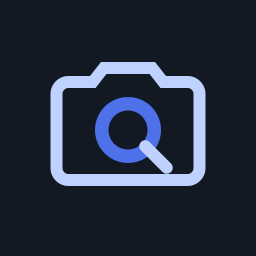

Capture into your vault
Take photos and videos without adding them to your system photo library. Quietake keeps pending captures in private storage until encrypted saving succeeds.

Quietake.An independent, open-source camera
Some moments are just for you.
Give them a little space of their own.
Photos and videos, saved in an encrypted vault on your phone. Optional backups to storage you control.
In development · Android first, then iOS
No official app download yet.
A quieter kind of camera
A small space to capture, organize, and revisit.
You choose what leaves it.
Take photos and videos without adding them to your system photo library. Quietake keeps pending captures in private storage until encrypted saving succeeds.
Browse, zoom, play, and find things again. Favorites, tags, and search keep your collection personal without sending it to a hosted library.
Keep an encrypted ZIP or connect your own HTTPS WebDAV storage. Save your recovery key separately. An independent recovery tool helps you get your files back without the app.
Privacy, with the details included
An encrypted vault is one part of the picture. Here’s what happens when you choose to share.
Read the full boundariesThe app you choose receives an unencrypted copy and may keep it. Your vault original stays encrypted.
Your receiver and local network can access the selected media during casting. That stream is not end-to-end encrypted. Locking stops the session.
Keep encrypted backups and your recovery key separately. Losing both access and recovery information can mean losing your media.
Source is available under GPL-3.0. Independent security review and store release checks remain ahead. Google Cast includes its own diagnostics.
Made in the open
Look around the source. Ask a question. Tell us what could be better.